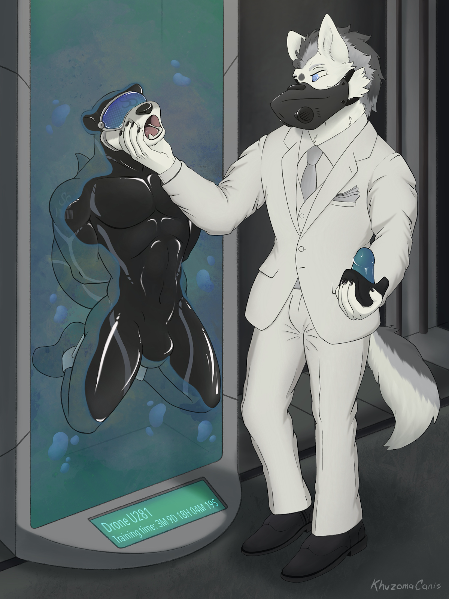

Hacker Jacker
Written by DripperDropper and TwistedSnakes
Illustrated by Casey-Damore
“C’mon c’mon c’mon!”
Beads of sweat betrayed themselves upon the ivory fur on Jarin’s forehead, reflecting the dull glow of the palm-sized computer in his hand. In the movies, you’d expect to hear a catchy heist tune to serve as a thrilling backdrop, but for Jarin the moment was anything but. As he sat in the white, sterile hall of the Silver Serpent’s server room, tension surged through his veins. He was on edge, waiting for the last bit of data to finish transferring to his mini-laptop. Hopefully, he’d have enough time to slip away before the guards returned from their scheduled patrols.
“70 percent…80…” Jarin mumbled quietly as he watched the hourglass continue its lethargic spin. Every second was an eternity as the near-complete progress bar sat there, taunting him. He looked feverishly over his shoulder again. The silence was deafening, punctuated by small noises that sent the otter into a panicked frenzy.
“90…95…99…come on, don’t stop now,” Jarin muttered a small curse under his breath. The bar inched in smaller and smaller increments towards the end of the window. His hand gripped the sides of his screen tightly as his heart pounded.
The progress bar disappeared and in its place appeared new files. But the job wasn’t over yet; he needed to confirm these were the files he wanted. He needed dirt on the Silver Serpent Casino; he wanted this as much as his client did, if not more.
He clicked on the file, but the screen turned black instead. Two white snakes appeared, shimmering in psychedelic shades of pale grey as they danced around the screen in elegant spirals. His eyes were affixed to the serpents, and his arms fell to his sides. A dumb smile appeared on his face; he could watch this all night.
Wait.
A moment of lucidity came upon him.
Hypnosis!
Jarin willed himself to put the computer down. Shut the screen. Get out of here. But another part of his mind fought back.
“You can’t leave,”
it said,
“you still need the files.”
“But you’re in danger,”
another part of him replied.
“If you don’t get out now, you’ll lose everything!”
He couldn’t decide. He should just stay here and wait for something to happen, then react accordingly. If the guards don’t come back, he’d be safe anyway. His gut feeling told him nobody would be coming. All was good.
If only he’d just let go of all his concerns, he’d come to see that it wasn’t all that important anyway. The computer in his hand was nothing but a transient entity in this flimsy reality. So was the server room, taking up an ephemeral position in the fabric of space-time. Yeah, all was good.
Before he knew it, he was seated on the floor of the server room. His bright hazel eyes were now glazed over, mesmerized by the shiny slithering serpents displayed before him. No other senses dared to steal his attention. The rest of the room melted away, leaving him alone with the light of the screen.
An undulating darkness swallowed up the space behind the dazed otter. Tendrils writhed about, poking through the umbral portal as a demonic being emerged from its surface. The ceiling lights reflected off his black latex skin, emphasising his muscular curves.
His face appeared draconic, but it seemed as if some evil had twisted his features into sharp contours. Deep blue were his eyes, looking eagerly upon his new, obedient prey. Two twisted horns stuck out the back of his head, and a pair of clawed wings flowed out of his back. Tendrils emerged from his back, hovering menacingly over the otter like a spider to a trapped fly.
“Look at me,” he commanded coldly.
Jarin’s body responded immediately. Standing up, the otter turned around to face the demon calling out to him. His blank eyes registered the demonic entity and he gasped. He had been caught! Instincts gripped him and he wanted to turn and run, but his body wasn’t listening to him.
“W—who are you?” he asked apprehensively. “Why are you here?”
“Who are you?” the demon repeated back.
Jarin opened his mouth to say something, but then he fought back. The demon’s hypnosis was invading his mind. It was making him do things and compelling him to betray his thoughts. He needed to resist!
“Won’t…tell…” he grimaced, attempting to pull his eyes away from the demon’s alluring gaze.
“Are you sure?” the demon purred, “You seem to have something you want to share. Get that weight off your chest.”
“I…I…”
“You’ll feel better about sharing. Don’t keep the guilt bottled up inside, gnawing away at your soul. Come, you can tell me.”
“I’m…Jarin…” his eyes glazed over and his voice took on a dreamy quality.
“Pleased to meet you, Jarin.” The demon acknowledged. “And what brings you here?”
“I’m here to hack into the Silver Serpent’s servers.”
“Oh, intriguing. And pray tell, why would you do that?”
“I was looking for incriminating evidence to bring the Silver Serpent down. Records of illegal activity, camera footage, under-the-table agreements.”
“Did you find what you’re looking for?”
“Yes, wait, no. I thought I did.”
“What did you find?”
“I found…
nothing. All the records look in order.
” After all the effort to sneak into the Silver Serpent, he found nothing but regular bookkeeping documents.
“That’s because the Silver Serpent is a law-abiding establishment.” The entity nodded. “You won’t find anything illegal here.”
“
Yeah…I guess so…
”
“Why did you need the evidence?”
“The Fortune Smiles Club hired me. They wanted me to find information that they could use to take the Silver Serpent down.”
“Oh, that sounds like underhanded competition. I’m not impressed. But I can see in your mind that you don’t normally take on jobs like these. Enlighten me, why did you accept this one?”
“Three of my friends are missing. One was last heard going to the Silver Serpent, another friend went missing looking for him. The third friend just disappeared, with only the casino’s website in his online history.
“Hmm, sounds like a very peculiar coincidence. But the Silver Serpent has nothing to do with it. After all, we are a law-abiding corporation.”
“
I guess so.
”
“I’m sure you’re very concerned for your friends. I’ll tell you what, since you’ve been such a cooperative otter, we can look for them together. How does that sound?”
“
I would like that.
”
The demon smiled. “Sleep.”
Jarin’s shoulders slumped and his eyes lost focus.
“Come, follow me.”
Decro made his way towards the exit of the server room, guiding the small otter down rows of server racks as they hummed around them. As they approached the exit, a dark mist swirled around the demon. His tendrils retracted into his back, and his wings and horns disappeared. White and grey fur emerged through his black latex skin. His draconic visage softened, returning to his canine form. He was now Decro, owner of the Silver Serpent Casino.
The wolf walked out of the server room and into another white corridor, with the otter following him obediently. They must’ve been an odd pair. An arctic wolf dressed in a white business suit and a lower face mask, followed by a small grey sea otter dressed in a standard black tuxedo, a disguise meant to blend in amongst the casino’s patrons.
But the staff paid no heed to them as they strode down the corridor, coming to a white elevator lobby. Sensors detected their presence, and one of the six lift doors opened to them with a chime.
“B6,” Decro ordered as they entered the elevator.
The doors closed and the elevator swiftly sped them upwards. They were still underground when they exited the lift; the network of processing rooms and staff areas snaked through the earth beneath the casino complex. Decro led Jarin into a lobby similarly furnished to the one on the previous floor, only this time with dozens of staff shuffling to and from the various adjoining corridors. Some of them held clipboards in hand, others were leading slaves behind them. Some passages led to the public sections of the Silver Serpent through discrete doors.
They came to one of the many rounded rectangles built into the white wall panels, glowing a soft blue. Decro stepped in front of it and a column of light glowed around him.
“Personnel Decro Castor detected. Access granted,” a calm robotic voice announced.
The rectangle rippled and shimmered as the panelling dissipated from the wall, revealing another room. On the opposite end was a glass window and a door, both of them leading into a second smaller room. A control panel sat beneath the glass window, featuring a wide display screen. It was a preparation laboratory.
“Go into the other room,” the wolf ordered.
Jarin complied, walking stoically through the other doorway. The door panel materialised behind him, but he took no notice of it as he centred himself in the room. Decro stood in front of the control panel and tapped on the display. He knew the perfect fate for the otter.
“Now relax. We will find your friends very soon,” the wolf’s voice spoke through the hidden speakers in Jarin’s room.
Mechanical arms descended from the ceiling of the other room, grabbing the otter by his wrists and pulling him off the ground. Metal arms with blades turned his clothes to shreds within a matter of seconds before nozzle-tipped tendrils took their place. Clear, sticky liquid sprayed from their tips, coating the otter’s fur with its viscous surface.
Jarin was unfazed, staring blankly at the one-way mirror that Decro was watching him from. Perhaps he was lucky he was lost in his trance; the sticky liquid smelled of industrial adhesives, thoroughly soaking through his fur and onto his skin. Once the glue cured, it would bind any surface to him permanently.
“Let’s give you a new skin. You want to look nice when you finally meet your friends, don’t you?”
“
Yes, sir,
” Jarin nodded stiffly.
The mechanical arms stretched a latex suit outwards to Jarin’s body, holding it aloft in front of him as the bindings on his arms began to guide his hands into the suit’s sleeves. His palms slid into a pair of attached gloves as the mechanical tendrils lifted him slightly to guide his feet down through the legs. Another ceiling-mounted arm descended, carrying a small blowtorch. It proceeded to fuse the seam along Jarin’s spine, fully encasing the otter in a smooth latex skin.
“Suiting complete, beginning contact and port integration” the calm robotic voice droned as the hood of the suit was pulled over Jarin’s ears with a resounding snap. The latex formed a boundary just above Jarin’s brow as the arms began rotating him forward, aligning his chest to the floor.
A set of additional clamps secured themselves around either of Jarin’s ankles as his entrance was spread open. A tendril extended a hard, metallic shaft into the cavity of the otter’s tailhole. As it twisted, small probes extended from it, secure the anal port in place. The arm pulled away, revealing a metal ring keeping Jarin’s pucker open. The other arms returned Jarin to the upright position.
“You’re doing good so far. The next part may seem a little scary, but you’re a brave otter, aren’t you?”
“
Yes, sir,
” Jarin nodded again, smiling at the compliment.
A helmet descended over his head, encasing it in a metal shell. Within the darkness, Jarin could only hear the sound of whirring drills as the device bore two tiny holes in his temples. Pain should’ve erupted through the otter’s senses, but the spell Decro held on Jarin was too potent. Instead, he did not react as the metal probes were inserted through the holes, forming a neural interface with his brain. The holes were capped with metal contacts, ready for a device to connect to it. Light flooded his vision once again as the helmet released his head.
“Visor contacts and anal port secured, commencing etching phase.”
A set of finely tipped needle-like appendages descended from the ceiling. The needles skittered across his shoulder, repeatedly stabbing the latex surface as it tattooed his new skin. The Silver Serpent logo slowly took form, followed by a barcode beneath. The barcode provided the otter with his new identity and designation: Drone U281. The arms let go of him, leaving him to stand stiffly in the room.
“I’m proud of you. Now, step away from the centre.”
“Okay.”
Decro entered another command into the control panel, and a person-sized pillar rose out of the ground. One side of it was flat, made of a blue translucent solid that formed the bulk of the pillar. The other side was made of metal and shaped like a semicircle, housing the translucent solid. A display panel glowed softly, with the words “Status: vacant” on it.
With another tap of the button, the doorway panel between the rooms disappeared and the wolf stepped into the room with Jarin.
“Come here.”
Jarin walked to where Decro indicated so that the wolf was in front of him and the device was behind him. Decro took a few moments to take in the sight of the otter. The latex suit hugged the otter’s skin tightly, bringing out the smooth curves of his sculpted muscles. His face had a blank expression, staring blankly at the wolf.
“Careful, now.”
Holding Jarin by his shoulders, Decro pushed the otter towards the device. The otter stepped back until his back pressed against the translucent material. It softened and reshaped itself to accommodate the otter’s body. The gel lapped against his latex skin, gradually pulling him deeper into the device.
The gel brought Jarin’s arms behind him and lifted his legs up so that he was no longer standing on the ground. It pressed his calves to the back of his thighs, suspending him in the semisolid. The gel then stiffened, trapping the otter within with only his half his head, chest, and thighs exposed.
“Intelligel. An experimental piece of technology we’ve been developing in our labs. How does it feel?”
“It’s firm and strong.”
“Do you like it?”
“It is comfortable.”
Decro grabbed the otter’s rubber bulge and massaged it in his hands.
“Mfngg…” Jarin groaned, feeling the bliss wash over his gel-encased body.
The wolf continued squeezing and teasing the latex-clad crotch until the otter was close to climaxing in his rubber suit.
“Wake.”
The dazed look on his face disappeared, replaced by an expression of confusion.
“W—what…”
The otter's mind was suddenly wracked with pain as the holes drilled into his head made themselves known, wincing his eyes as he struggled in the strange blue substance he found himself partially encased in. His eyes fell upon Decro and they widened in recognition and fear.
“You! W—where am I?”
“Still in the Silver Serpent,” Decro said coldly.
He walked over to the side where a wall panel had slid away, revealing a shelf with a visor and a lower face mask. Built into the face mask was a dildo gag that would fill out its wearer’s maw. The otter’s eyes widened in fear as he caught sight of the devices emerging from the wall, straining futilely against the hold of the gel locking him in place.
“What the fuck is this?!”
“Your new face. Since you so eagerly broke into the Silver Serpent, I can only imagine how much you want to stay.”
“New face? No….no no no no no!” Jarin pleaded as Decro approached with the visor and mask in hand.
He tried to pull his head away, but as much as he tried, the unyielding gel held him in place. He held back his tears as the wolf came to face him.
“Please, let me go, I won’t say a word, I promise, please!” he cried desperately. “I have a partner to return to!”
“Don’t worry, your concerns will soon be gone.”
The visor was secured to the contacts that were mounted to Jarin’s temples, replacing his clear vision with a deep tint of blue. The Silver Serpent logo flickered to life on the outside screen of the visor, while the inner display booted with a set of cyan snakes twirling about in a spiral-like pattern. Static erupted into the otter’s mind as the visor overwrote the auditory cortex of the frontal lobe of his brain, soon replaced by a smooth feminine voice.
“This Unit is the registered property of the Silver Serpent Casino, designated U281.”
“No…n…nnnngh…!” the otter shook violently in the hardened gel, trying his hardest to shake the monotonous voice out of his head.
“I’m Jarin! I’m Jarin! I came here to the Silver Serpent.
I work here as a drone
no! I came here to find my friends,
to join them in service to the Silver Serpent
argh! Get out, get out of my head! I’m here to save my friends, to expose the Silver Serpent…
to serve my designated patrons with absolute obedience. I am U281.
T…Thi…
This Unit is an object, its will is that of the Silver Serpent’s. Memory storage and overwrite: complete. Free will suppression active. Drone is ready for extended training phase.
”

Drone U281 was only vaguely aware as Decro squeezed between its jaws, prying them open with one hand. His other hand pushed something against its face, and a phallic object entered its mouth. The dildo gag filled out its maw, nudging the back of its throat as the mask pressed against its adhesive-coated face. U281 choked, trying to cough the silicone cock but the mask had already fused to its maw. It was never coming off.
A countdown timer appeared on the display of the device, indicating the remaining duration of U281’s training. The device descended into the ground, bringing the drone with it into the storage bunkers deep within the Silver Serpent.
“I’ll see you in three months.”
Luxury manifests itself in a multitude of ways. This could not have been contrasted more as Evaris sat in one of the bars in the Silver Serpent. His black Avelé suit contrasted the silky white uniforms of the casino’s staff. The gold crowns in his crocodile teeth contrasted the silver gleam of the two “S”s that formed the Silver Serpent’s logo inlaid in the floor tiles.
Something shady was going on beneath the exquisite veneer of the Silver Serpent, Evaris was sure of it. If only he knew where to look.
“Bitter beer!” he barked at the latex drones behind the bar.
He didn’t like to admit it, but he did enjoy the bondage theme of the casino. Something about being served by service staff pretending to be a mindless drone appealed to his inner megalomaniac. He should implement something like that in his club.
An otter drone served him his drink in a fancy crystal glass, stepping away with a polite bow. The crocodile wasn’t expecting the lavish treatment for his order of mediocre alcohol, but then again, the bars here were accustomed to selling wine worth thousands a cup.
Wait, that otter seemed familiar…
But it couldn’t be. His informant must’ve chickened out, leaving the investigations unfinished. His private investigators traced the missing informant’s name to one-way flights to the middle of nowhere. He probably left to live the mediocre life of a farmer or something. Evaris snorted.
“Ah, you must be Evaris,” a voice spoke behind him.
He turned around to see a wolf in a white suit.
“That’s my name. Who are ya?” he furrowed his brow suspiciously, taking a sip from his glass as the bitter beer slid down his throat, the crocodile muttering out a low grunt.
“So what brings you here?” the wolf brushed away his question.
Evaris grunted once more, but his mouth was already ahead of him.
“Checking out the Silver Serpent,” the crocodile blurted out. “I suspect there’s some fishy business going on here.”
“I see. Is there something in it for you?”
“I run the Fortune Smiles Club,” Evaris admitted, his mouth moving ahead of his mind. “We’re in direct competition with the Silver Serpent, so it’s in my company’s best interests to take it down through any means necessary.”
“Ah, that is a shame. The Fortune Smiles Club sounds like it has a lot of potential, but yet you resort to such underhanded means to achieve success. Do you think that’s the right thing to do?”
“No…” the crocodile’s face was downcast. “I guess not.”
“But you can make things right.”
“I can?” a spark of hope flashed in his eyes.
“Yes. There’s always a way to make things right. ”
“Tell me, please.”
“Since your transgression is against the Silver Serpent, it is only right you owe it a favour.”
The crocodile nodded. It made perfect sense.
“So, when the time comes, I will ask of a favour from you. You will comply with no questions asked, and everything will be made right.”
Evaris’ face relaxed with an expression of relieved enlightenment.
“Yes. Yes, that is the right thing to do.”
“Good,” Decro smiled. “Now, wake.”
The crocodile turned back to the bar to see his half-finished glass of beer. For the cheapest drink on the menu, it tasted quite good. Perhaps it was the ambience: classical music played from the live piano in the corner. Groups of patrons focused on their quiet conversations, while lone guests were lost in their thoughts as they sipped on their wine.
Bah. This was all a futile search, anyway. He had been mistaken; there was nothing suspicious to be found in the Silver Serpent. Downing the last of his drink, he tapped his membership card on the sensors built into the bar to make his payment. With a sigh, he slid off the seat and made for the exit.
Perhaps he was going about this the wrong way. Instead of focusing on taking down the Silver Serpent, he should be working on the Fortune Smiles Club instead. He should upgrade its facilities, grow its member count, and expand its business networks. One day, it would be known as a world-renowned entertainment establishment, with Evaris at the helm. And he would owe it all to the generosity of this fine institution.
Maybe when the time came, he could be of use to the Silver Serpent.
~ End ~